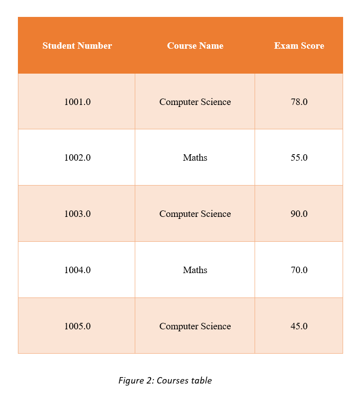
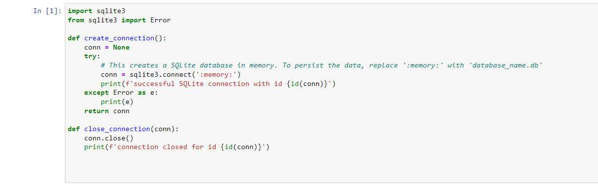
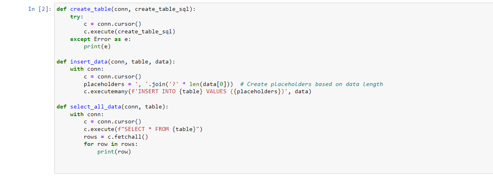
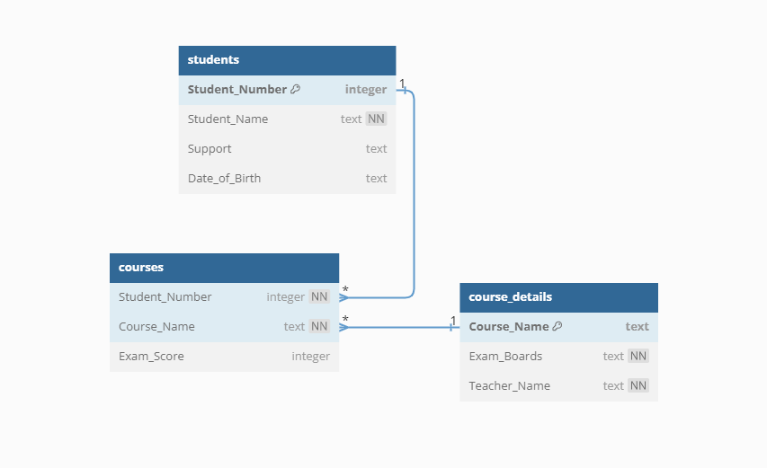
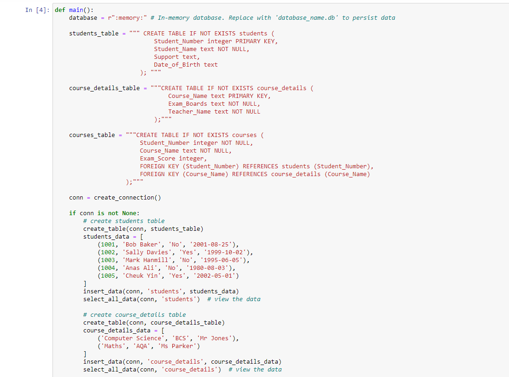
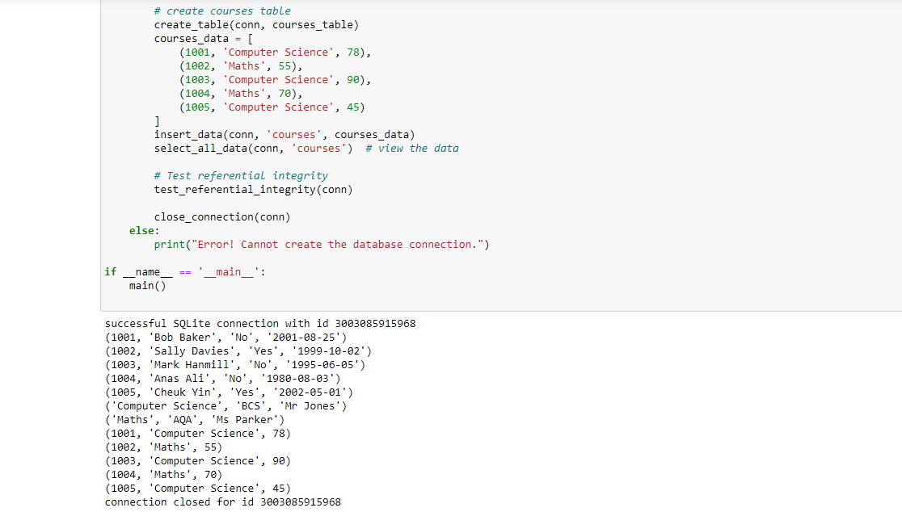

Artefacts
Outcomes from the Team Exercises and activites
This unit consists of 3 parts:
- Data Normalisation
- Database Build
- Reflection piece
✥ Normalization
Data analysis is a process that prepares a data model for implementation. The specific technique is called normalization.
Normalization is a data analysis technique that organizes data attributes so that they are grouped to form non-redundant, stable, flexible, and adaptive entities. (Li et al, 2009).
There are several kinds of normalization, as shown below:
- 1NF (1st Normal Form, eliminate repeating groups): Make a separate table for each set of related attributes, and give each table a primary key.
- 2NF (2nd Normal Form, eliminate redundant data): If an attribute depends on only part of a multi-valued key, remove it to a separate table.
- 3NF (3rd Normal Form, eliminate columns not dependent on key): If attributes do not contribute to a description of the key, remove them to a separate table.
1NF, 2NF, and 3NF are common requirements for data analysis.
Activity:
Below you will see a table with data in un-normalised form. You should normalise this data to 3rd Normal Form (3NF), showing each step of the process i.e., demonstrating 1NF, 2NF and 3NF. Use the table below:
✓First Normal Form (1NF)
In order to reach the First Normal Form (1NF)
- Remove redundant groups from each table.
- For each group of related data, make a distinct table.
- Use a primary key to identify each group of related data.
To achieve this, the NaN values are removed and then associated with every course to each student using a composite primary key (Student Number and Course Name) as shown below.
Each row corresponds to a single record, and there are no recurring groups. 'Student Number' and 'Course Name' make up the primary key. The data are now in First Normal Form (1NF).
✓Second Normal Form (2NF)
To reach the Second Normal Form (2NF)
- Fulfill each First Normal Form criterion.
- Subsets of data that are applicable to multiple rows of a table should be removed and placed in separate tables.
- Use foreign keys to establish relationships between these new tables and the previous ones.
According to the above table, "Exam Score," "Exam Boards," and "Teacher Name" are reliant on "Course Name," whereas "Support," "Date of Birth," and "Support" are based on "Student Number." Consequently, we may divide the table into two sections: one for the information on the student and one for the information on the course.
The KeyError appears to have been triggered by trailing white spaces in the column names. The data is then spit after after eliminating these blank areas.
Subsets of data that are applicable to several rows of a table have been removed and put in separate tables. The primary key for the "students" table is "Student Number," whereas the "courses" table contains a composite primary key made up of "Student Number" and "Course Name." The data is now in Second Normal Form (2NF).
✓Third Normal Form (3NF)
The Third Normal Form (3NF) must be attained by:
- Satisfying all criteria for the second normal form.
- Columns that are not dependent on the primary key should be removed.
"Exam Boards" and "Teacher Name" in our "courses" table depend on "Course Name," but not on "Student Number." As a result, "Exam Boards" and "Teacher Name" can be moved to a different table, where "Course Name" serves as the primary key.
Columns that are not reliant on the primary key have been eliminated. 'Course Name' serves as the primary key in the table 'course_details'. The data is in Third Normal Form (3NF).
The final normalized tables in 3NF are shown below:
Advantages of Normalisation:
- Data redundancy is reduced with the aid of normalization.
- Improved database organization overall.
- Data consistency within the database.
- More adaptable database architecture.
- Enforces the concept of relational integrity.
Disadvantages of Normalisation:
- Before constructing the database, you must first ascertain the demands of the user.
- When the relations are normalized to higher normal forms, such as 4NF and 5NF, the performance suffers.
- The process of restoring higher degree relationships to normalcy takes a long time and is challenging.
- Careless deconstruction can result in a poor database design, which can cause major issues.
✥ Database Build
Activity:
Instructions: Once you have completed the Normalisation Task (also in this unit), you should then build a relational database system, with linked tables, demonstrating your knowledge of primary and secondary keys. Test your database to ensure referential integrity.
Step 1: Import the required libraries and create a connection to the Database.
Here the Python standard library's sqlite3 module was used as it offers an interface to the SQLite database. Then the create_connection function is used to establish a connection to a SQLite database. A connection object is returned. And the close_connection function terminates the SQLite database connection as it is crucial to shut it down when the connection is done.
Step 2: Create a table and insert data.
To create a table, the create_table function was used which executed a SQL command. Then, to insert the data into the respective specified table, the insert_data function was used. Note: It is possible to insert numerous records at once using the cursor object's executemany method. Based on how many elements each data tuple has, the function generates insert statement placeholders dynamically.
Step 3: Test referential integrity.
Test for referential integrity by attempting to put a row into the "courses" table with a "Student_Number" or "Course_Name" that doesn't already exist in the "students" or "course_details" tables, respectively. e.g (9999, 'Nonexistent Course', 80). Result: The fact that there was no IntegrityError suggests that the foreign key constraints are functioning properly, and the database is maintaining referential integrity. The database is correctly preventing from inserting invalid data that would violate the relationships between the tables.

Step 4: Definition and execution of the main Function.
The main function creates the connection, creates the tables, populates the tables with data, checks referential integrity, and then closes the connection to complete the database setup. When creating the tables, the columns need to be properly defined. For example, Student_Number integer primary key where this line denotes that the "Student_Number" column, which contains integer values, is created by this line. The primary key keyword denotes that this column serves as the table's primary key.
Below is an Entity-Relationship Diagram of the database:
Also, the main function specifies the data to insert into the tables as well as the SQL statements for establishing the tables. When the script is executed, the final line, if __name__ == '__main__': main(), ensures that the main function is called.
When the script is executed, the final line, if __name__ == '__main__': main(), ensures that the main function is called.
References:
- DBMS normalization: 1NF, 2NF, 3NF and BCNF with examples - javatpoint (no date) www.javatpoint.com. Available at: https://www.javatpoint.com/dbms-normalization (Accessed: 21 July 2023).
- Li, Q. and Chen, Y.-L. (2009) ‘Entity-relationship diagram’, Modeling and Analysis of Enterprise and Information Systems, pp. 125–139. doi:10.1007/978-3-540-89556-5_6.
- ‘Introducing relational theory’ (no date) Beginning Relational Data Modeling, pp. 27–56. doi:10.1007/978-1-4302-0015-4_2.
✥ Reflective Piece
In the hospitality industry, data normalization and database design are essential for data integrity, consistency, and efficiency. These principles learned throughout this unit to reduce data redundancy and prevent anomalies, is crucial in systems like bookings where accuracy is paramount. A well-designed database facilitates efficient data querying, necessary for large databases like customer databases or hotel inventories.
Normalization ensures data consistency which is important to properly maintain customer experiences. A properly normalized and designed database is more scalable, adapting to changes like new hotels or services.
It also facilitates data analysis and insights generation, enabling the identification of trends, demand prediction, or efficacy of promotions. More specifically, as a person who uses Power BI daily, normalized databases simplify the data model, making it easier to connect various tables and create complex relationships in Power BI. This leads to more meaningful, detailed, and comprehensive visualizations. Also, efficient querying from a well-structured database can lead to faster data refresh times in Power BI, which is critical when dealing with real-time or near-real-time data.
Lastly, it enhances data security by allowing restrictions on tables with sensitive data. In summary, understanding normalization and database design helps a data scientist in the hospitality industry improve data management, efficiency, security, and business insights.